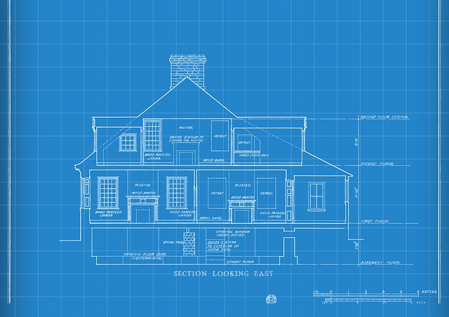

Extend Yourself - FabMaker Studio: Math-itecture
 Create a Blueprint
Create a Blueprint
Create a blueprint of your famous building. Architects often use blueprints, or drawings, to help them design and construct a building. A blueprint is like a map and shows where the doors and windows are, where the walkways and driveways are, and of course any perimeter around the building. Be sure to include all measurements, including the height, length, and width of your building as well as labels for the different parts of your blueprint.

Real Life Research
Research the real-life dimensions of your famous building. After you find the dimensions, determine the perimeter length of a security fence if it went around your real-life building. Does the building have a perimeter in real-life? What is it made out of? Can you compare your calculations to the actual perimeter fence measurements?